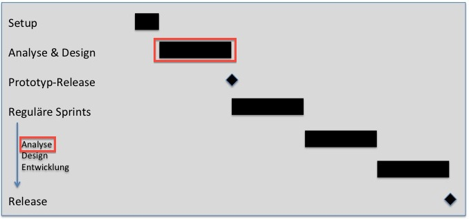

The requirements definition is done in two steps:
-
All requirements are discussed in workshops and the results will be documented in meeting minutes. The user can give feedback and add comments
directly in the meeting minutes.
-
Analysts interpret the workshop results and write the interpretations in a half formal way to the Produkt Backlog.
From the backlog candidates for measures, context elements and specifications for information objects can be automatically derived.